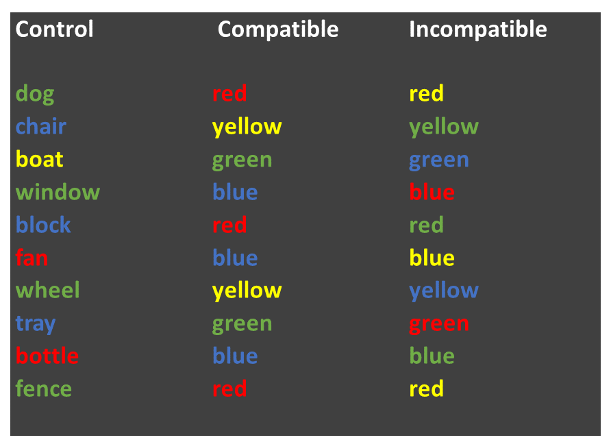

8 Week 8: Related-samples t-tests, plotting means and SE bars
Written by Tom Beesley & John Towse
Today we will take a look at summarising means and standard errors (SEs) from our data. We will look at how we plot these together on the one graph (using ggplot() commands that allow us to share mappings between different geoms. We will explore our data on the famous “Stroop Task” and we will use a related-samples t-test to examine the differences between the means of our different conditions in this task.
8.1 Pre-lab work: online tutorial
Online tutorial: You must make every attempt to complete this before the lab! To access the pre-lab tutorial click here (on campus, or VPN required)
Getting ready for the lab class
- Create a folder for Week 8 and download the Week_8.zip file and upload it into this new folder in RStudio Server.
8.2 RStudio Tasks
8.2.1 Calculating means and SEs
The “Stroop Effect” is a classic demonstration of automaticity of behaviour. Participants have to say the colour a word is printed in, which is an easy task for a “compatible” stimulus like GREEN, and a much more difficult task for an “incompatible” stimulus like BLUE. We can’t help but read the text - it has seemingly become an automatic process.

In this task we will calculate the means and standard errors of the means and then we will then plot them using ggplot(). First though, we’ll need to inspect the data and maybe do a bit of data wrangling by using our filter() command.
Open the script “Week_8_script.R” (see prep work)
Run the
libraryand add aread_csvline to read in the data set. Call your data something meaningful (perhaps data_w8 or data_stroop but maybe not bestest_most_fantastic_data_on_the_stroop_test_eva_init)View the data with
View(data). You will see that the data are a little different from the data we have worked with previously. We have an pID variable, which gives a unique number for each person and each person has 3 rows. This is because the different conditions of the Stroop task reflect a within-subjects variable (related samples). For data like this it is often useful to have them arranged in what is referred to as “long format”, with multiple rows for each response the participant provides. For the current data that means we have a variable called condition, which is our IV, and one called time which is our DV.Let’s look at the distribution of time (our DV) as a function of condition. Complete the next chunk of code by mapping x to time and fill to condition for our
geom_density()plot. You can play around with the alpha parameter, setting it to a value between 0 and 1 - note that this is done OUTSIDE of theaes()command.We seem to have some outlier values at both the high and the low ends. It’s probably best if we remove data for the whole participant if their average time is unusual. To do that, we’ll need to create a new column. Here we will introduce you to a new function called
mutate(). This function will create a new variable (column) from an old one. Run this next block of code (you don’t need to edit this one) to create the new column, avg_time. We are using this in combination withgroup_by(pID)because we want to calculate the average time for each participant. Useview()to take a look at the data to check the column has been created correctly.Edit the
geom_histogram()code to plot the distribution of values in the new avg_time column.We now need the filter out the values in our data that we feel are unusual. Like last week, we will do this (for now) in a fairly unprincipled manner, by “eyeballing” the data (next week we’ll consider something a bit more “scientific”). Complete the filter command so that it removes both the very low values in the avg_time column, and also those that are very high. Because you want to filter out low AND high values, you are using an AND expression (&). You will therefore need to enter in two numerical values, based on your assessment of the histogram produced for Q6. Note that you need to think about how you are storing the result of this filter process. Do you want to create a new object, or overwrite the existing object?
Check the new distribution of average times after this filter has been applied to the data.
8.2.3 Plotting the means and SEs
- In Task 2 you calculated the means for each condition in the Stroop task. We’ve seen in lectures that “standard error” provides an estimate of how variable that mean will be across the samples we collect. A very typical way to plot a mean value is to plot it with the standard error of the mean (SEM):

The code from Task 2-Q1 will give the mean. We will now complete the second line of this code to give the standard error values. TO do this, you simply need to add the correct variable (DV) to the
sd()command to calculate the SE values (note that you don’t need to put anything inn(), as this simply calculates how many rows there are).View the new object summary object you have created. Check that the means and SEs are different for the 3 conditions. If they are the same, you probably summarised the wrong column!
We will now plot these 3 mean values in a figure. Let’s use
geom_point()so that our means and SEs look a bit like the figure above. Complete the ggplot command to plot our summarised value called stroop_mean (y), as a function of the IV, condition (x).Now we need to add some “error bars” which provide a visual guide as to how much uncertainty we have in our mean value. Edit the code for the
ggplot()command to plot bothgeom_point()(same as Q4) andgeom_errorbar. You will need to calculate ayminand aymaxvalue. Use the illustration above to work out how to combine the mean value and the SE value (hint: add or subtract) to create the rightyminandymax.
EXTRA: These next steps can be completed to practice customising your plot
Add a
labs()layer to the plot to change the axis titles, and the title of the plot.Change the theme of the plot (e.g.,
theme_void())Map the fill aesthetic to the variable stroop_condition. You can do this for
geom_pointorgeom_errorbaror both at once by putting it in theaes()within theggplot()command.Manually change the colours of the columns with using
scale_fill_brewer(). Take a look at the Week 6 (6.3.7) for instructions on setting colours.Try changing your
geom_point()togeom_col.
8.2.4 Saving your work
Scripts: By now you are hopefully getting used to editing and working within the script. As you know, to save a script, you simply click the save icon, or press ctrl+S (cmd+s on a mac).
Plots: To save a graph you have produced, click the “Export” button in the plot window, then “Save as Image”. You can resize the graph and give it an appropriate filename. If you’ve set the working directory correctly, then the new file should appear in the current folder.
Data: The data objects you create (in the Environment) only exist within RStudio, and are temporary (with a script and the csv file, you can always redo the analysis). But what if you want to use the data elsewhere? For example you may want to share the data with your project (PEP?) supervisor. To do this, we need to write the data to a csv file (like those we use to import the data). You can do this with the following command: write_csv(the_data_object, "the_filename.csv").
Exporting from RStudio: The above save operations save files to a folder within RStudio Server. At some stage you will need to get these files out of RStudio Server, for example if you need a graph for your report, or you need to share the data or the scripts. Or maybe you want to make the csv file available to other researchers. To get files out of RStudio, simply select the files you want in the Files pane, click “More” and then “Export”. Selecting multiple files will produce a “.zip” file, which will need to be “unzipped” on your computer to access the individual files (instructions for Windows and instructions for Mac)
8.3 Week 8 Quiz
You can access a set of quiz questions related to this week here.